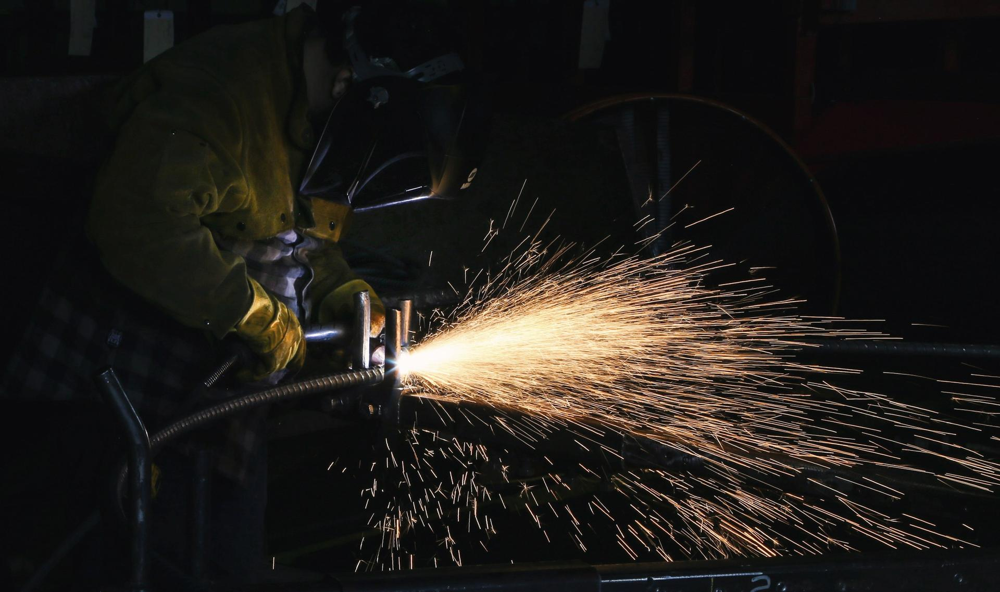

Kov, ktorý
vydrží.
Brány, zábradlia, konštrukcie a zámočnícke práce na mieru.

Brány, zábradlia, konštrukcie a zámočnícke práce na mieru.
Vyrábame brány, zábradlia a konštrukcie z kovu na mieru. Od náčrtu až po montáž.
Pošlite náčrt, fotku alebo rozmery toho, čo potrebujete vyrobiť. Nacenenie je nezáväzné. Každú zákazku robíme tak, aby sme sa za ňu nemuseli hanbiť ani o desať rokov.


Poctivý zvar a presný rez. Veci z kovu majú vydržať generácie.
Rozvody vody, kanalizácie a sanita od A po Z.
Konštrukcie pre haly, prístrešky a stavby.
Vykurovacie systémy, kotly a radiátory vrátane servisu.
Kované a oceľové brány, ploty a pohony.
Zábradlia na balkóny, terasy a oceľové schodiská.
Napíšete nám, čo potrebujete. Stačí pár viet alebo fotka.
Dohodneme termín a pozrieme sa na to priamo na mieste.
Dostanete jasnú ponuku s cenou a termínom.
Prácu urobíme poriadne a po sebe upraceme.